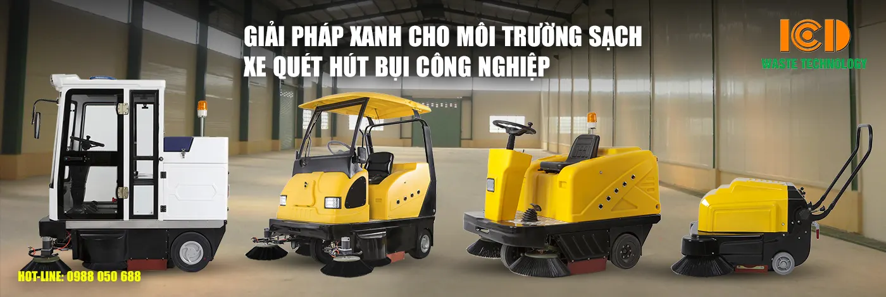
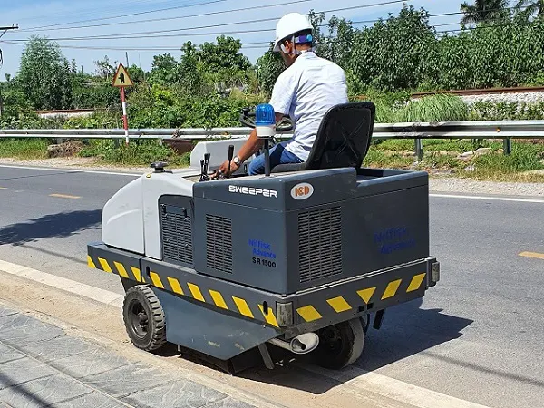
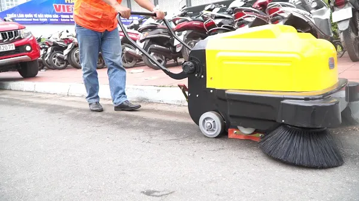

工业扫地车一直是广泛使用的有效清洁解决方案。阅读完以下文章，您将获得更多具体信息。
工业扫地车如今越来越普及和流行。凭借其优越性，它们被许多单位、企业和清洁公司所选用。目前市场上常见的两种扫地车是有人驾驶的工业扫地车和手推式扫地车。为了了解这两类产品的异同，请跟随我们一起看完下面的文章。

工业扫地车和手推式扫地车-清洁环境的绿色解决方案
驾驶式工业扫地车与手推式扫地车的相同点
这两类产品都是便于优化清洁步骤的实用机器。它们帮助人们更快速、更轻松地完成清扫工作。以下是可以列举的这两种工业扫地车之间的相同点：
产品丰富多样
由于认识到用户的需求及其带来的便利，许多制造商注重产品的外观和价格。这些产品的多样性使用户能够轻松选择符合自身使用需求和财务状况的产品。特别是，无论何种产品，其功能始终保持不变。
这两种扫地车的第一个共同点就是每款产品的丰富多样性
车辆外观设计现代，功能齐全
社会日益进步，所有交通工具都得到最优化和最现代化的发展。扫地车产品也不例外。大多数这些产品都是在现代化生产线和技术上原装生产的。因此，所有扫地车产品都带来完美的质量。
因此，用户可以完全放心其安全性、操控性和功能性。此外，这些产品在外观上评价很高，设计现代，带来了极高的实用性。
耐用性与抗冲击能力
这些产品大多采用高级塑料制成。这种材料不仅提供了高耐久性，还具有完美的抗冲击能力。此外，采用塑料材质，您无需过多担心生锈或腐蚀问题。
总之，这些都是能够快速清洁并优化清洁步骤的产品。同时，它们还具有较长的使用寿命和超越时间的耐用性。
驾驶式工业扫地车与手推式扫地车的区别
除了共同点，这两种工业扫地车还有许多不同之处。
结构与适用性
这两种产品首要且最基本的区别在于结构。每种产品的结构和设计都不同。因此，它们的适用性也不相同。
- 手推式扫地车结构更简单，因此通常用于面积不太大的场所，如住宅、别墅、小型超市等。
- 驾驶式扫地车结构更复杂，产品尺寸也更大。因此，它们仅用于宽敞的空间，并限制在设备或家具较多的地方使用。在这样的空间里，车辆无法到达每个角落进行清洁。因此，驾驶式工业扫地车仅适用于校园操场、礼堂、超市、购物中心等场所。

驾驶式工业扫地车适用于大型场地
投资成本
从这两种扫地车的尺寸和适用性来看，驾驶式工业扫地车的成本明显更高。每种扫地车产品价格高达数亿越南盾，而手推式扫地车价格更为亲民，每台仅约几千万越南盾。
因此，根据使用目的和经济状况，您可以选择合适的扫地车类型。
使用方法
每种机器的使用方法各不相同。对于工业扫地车，操作员只需坐在车上，驾驶车辆行驶到需要清洁的位置。
而使用手推式扫地车的人则需要依靠自身推力移动到有污垢的位置。

用户必须用力操控手推式扫地车
希望以上文章中的信息能帮助您进一步了解坐式工业扫地车和手推式扫地车。如果您正需要购买此类产品，请立即联系越南工业和城市发展股份公司（ICD）。我们是各类道路清扫车及环境卫生设备的供应商，产品原装进口，质量有保障，保修政策明确。请通过以下信息联系我们，获取详细的咨询和支持。
越南工业和城市发展股份公司（ICD）
热线电话：1800 6542 - 024 2200 9188 - 0961 370 688
总部地址：72号路 - 升龙六桥区 - 金弩 - 东英县
河内办事处：黄国越路489号 - 纸桥郡 - 河内
胡志明市分公司：李常杰路50/3号，旭门镇，胡志明市